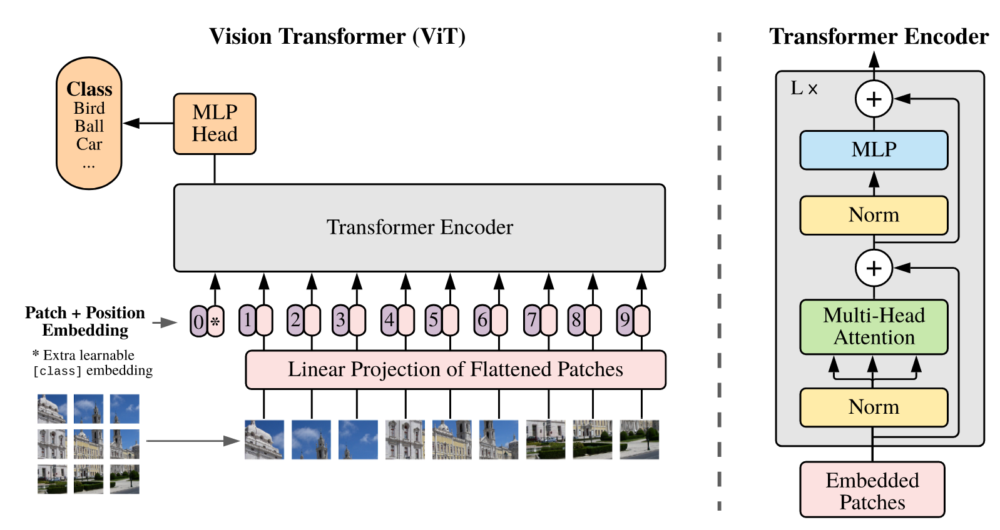
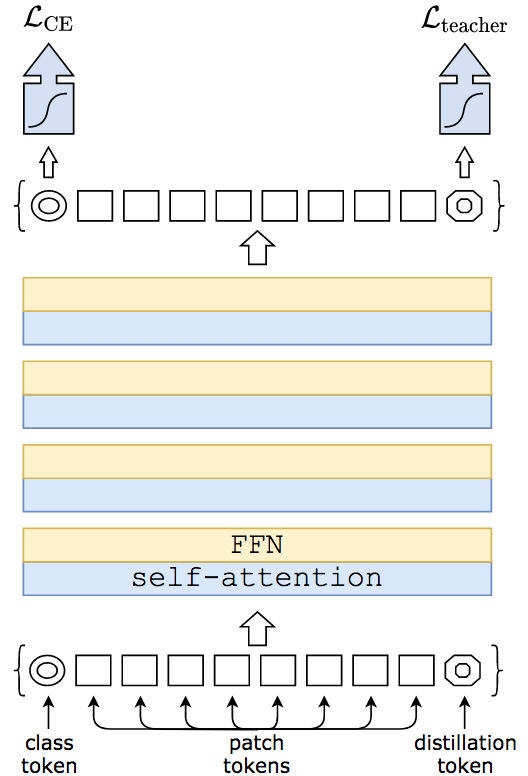
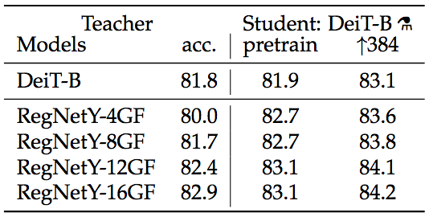

Advanced Machine Learning @ Opencampus
Transformer
for Computer Vision
Wednesday, 27.01.2021
The Basics
Very short summary before we start.
Convolutional Neural Network

Long Short Term Memory

The concept of Attention

Can we treat images as text?
ViT (Vision Transformer)

ViT Limitations
When trained on mid-sized datasets such as ImageNet, such models yield modest accuracies of a fewpercentage points below ResNets of comparable size. This seemingly discouraging outcome maybe expected: Transformers lack some of the inductive biases inherent to CNNs, such as translation equivariance and locality, and therefore do not generalize well when trained on insufficient amountsof data.
Text from the Original Paper
DeiT (Data Efficient Image Transformer)

Distillation

We have observed that using a convnet teacher gives bet-ter performance than using a transformer.
Text from the Original Paper